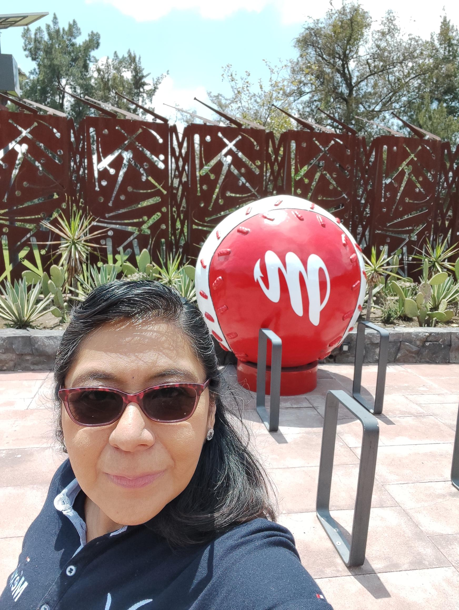

Curriculum Vitae
Lourdes Alejandra Osorio Chulín.
Téc. Profesional en Programación
Celular: 55 54065629
Email: ochulin_la@hotmail.com

RESUMEN DE EXPERIENCIA PROFESIONAL
- Octubre 2021 - Abril 2023 Apso Information Technology
Asignada a Grupo Martí S.A de C.V.
QA, Testing, creación de matrices y ejecución de pruebas
- Noviembre 2019 - Junio 2021 itCARE - Consultoría
Asignada a Malta Texo de México SA de C.V.
QA, Testing, creación de matrices y ejecución de pruebas
- Febrero 2019 - Octubre 2019 Capgemini / K2 Partnering Solutions de México S de R - Consultoría
Asignada a Zurich,
Desarrollo
- Febrero 2018 - Enero 2019 Software Avanzado - Consultoría
Asignada a Zurich,
Desarrollo
- Agosto 2015 - Febrero 2018 itCARE - Consultoría
Asignada a Malta Texo de México SA de CV,
Desarrollo
- Junio 2003 - Junio 2015 Banco Azteca
Grupo Salinas,
Gerente de Sistemas
FORMACIÓN ACADÉMICA Y CAPACITACIÓN CONTINUA
- Febrero 2023 Postman Capacitación Martí
- Enero 2023 Punto de Venta Martí (POS) Capacitación Martí
- Noviembre 2022 Asana Capacitación Martí
- Octubre 2021 SAP Mercaderias y Finanzas Capacitación Martí
- Octubre 2021 TestLink Capacitación Martí
- Octubre 2021 Mantis Capacitación Martí
- Julio 2020 Curso Python Curso por internet
- Octubre 2006 Transformación Organizacional GS Centro Capacitación BAZ
- Junio Transac SQL Aster
- Octubre 2005 Clear Quest Centro Capacitación BAZ